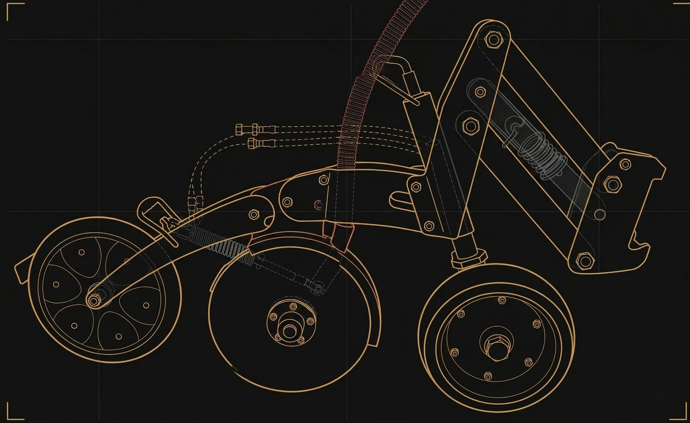
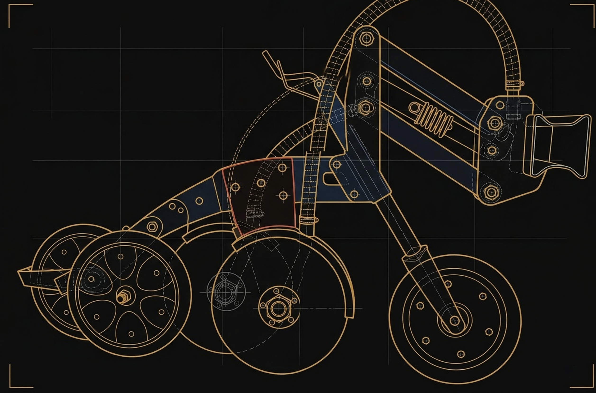
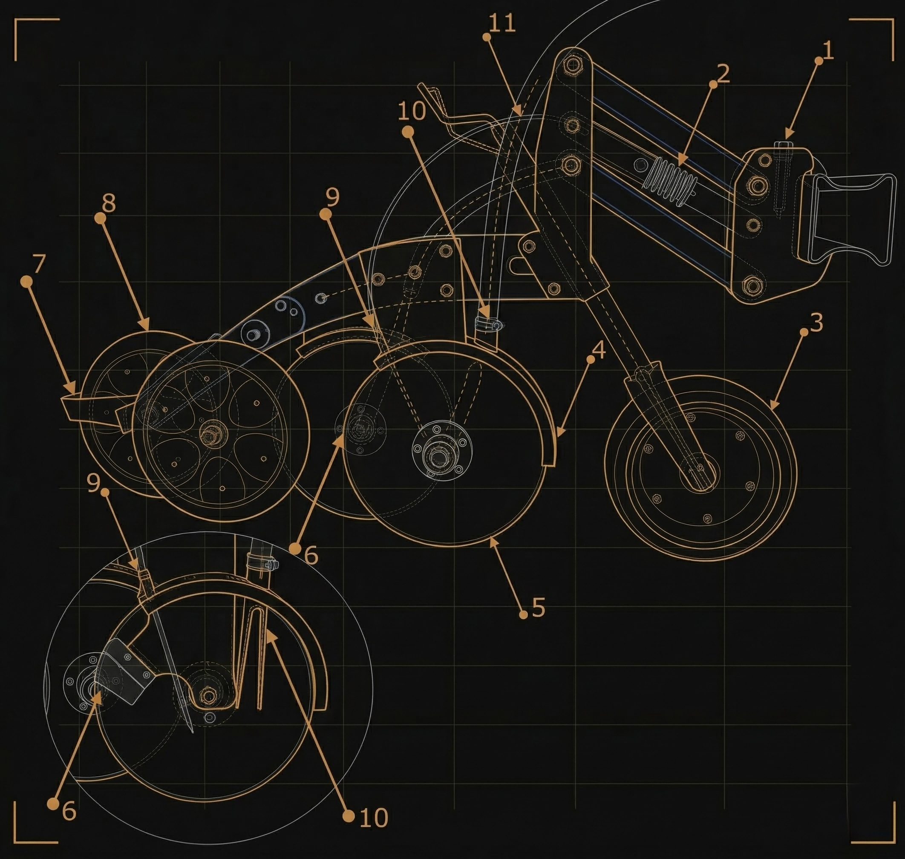
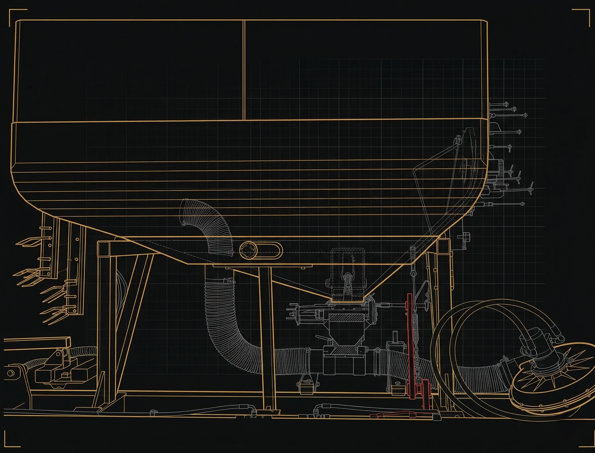
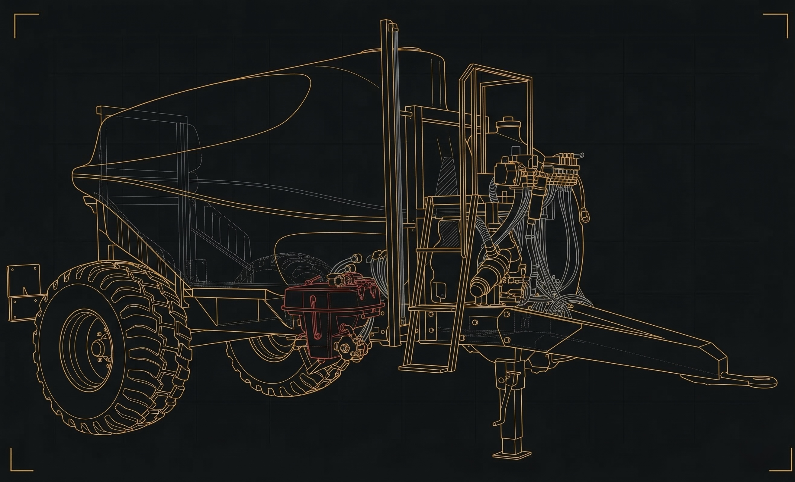

Паралелограм з додатковою пружиною для підсилення тиску сошника на ґрунт — до 140 кг. Копіювальне колесо для точного налаштування глибини загортання насіння. Переналаштування міжряддя за допомогою одного болта.

Висівний диск зі спеціальної високоміцної сталі. Дворядний підшипник — без обслуговування. Металевий захист диска від потрапляння ґрунту в міждисковий простір. Внутрішній чистик дисків. Армований насіннєпровід зі збільшеною міцністю.

Два висівних диски на одному паралелограмі. Дворядковий посів з відстанню 10 см. Прикочувальні колеса зі спеціальним покриттям проти налипання землі. Чистик для запобігання налипанню землі на прикочувальні колеса.


Система одночасного внесення інокулянту та/або рідких добрив безпосередньо в посівне ложе. Точне дозування через форсунку з отвором 0,6–1,0 мм під тиском — без світла та інших шкідливих для бактерій факторів.

Бак 600–2000 л безпосередньо на універсальній рамі. Компактно та стабільно. Для малих і середніх площ.

Причіпний бак 2700–6000 л. Для великих площ та максимальної автономності. Автоматичне поповнення бака на рамі без зупинки.